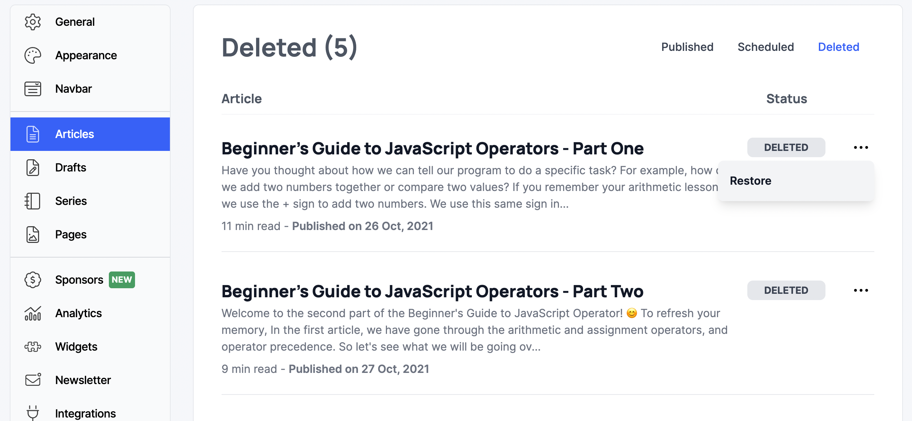
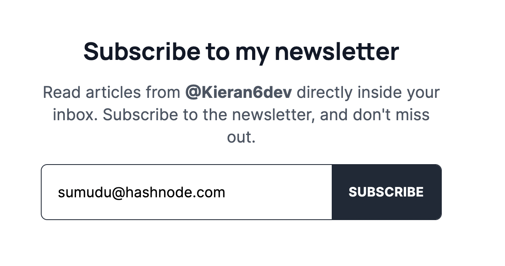
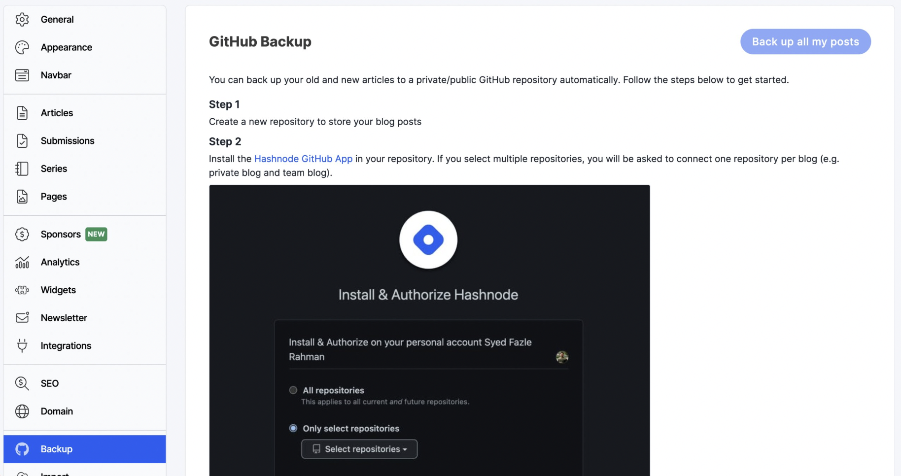

Hashnode Update: Import devto Posts as Drafts and Post Creation Page Improvements
Here are the features and improvements added to Hashnode in our latest release.
Import devto posts as drafts
Earlier we only had the capability to import a single post (via post url) or import all posts (via username) from devto and publish them straightaway. Now you have the ability to import either a single post or multiple posts as drafts.
Import a single post (via post url) - Either publish it or import it as draft.
Enter post url in field below Import single post label and click on Import.
Click on Import as Draft.
Wait while the draft is being created.
On successful draft creation, you will see the post title highlighted and you can visit it now.
Import multiple posts (via username) - A user can select all or only the post they want to publish directly or import as drafts.
Enter your devto username in the field below Import multiple posts label and click on Import.
By default, all the posts are selected.
Select those which you wish to import.
Click on Import as Drafts which will start the process of importing selected posts as drafts.
Your imported drafts will start listing as shown and you can click the post title to visit the draft.
Post creation page improvements
Performance improvements on the post creation page with faster load times.
Improved draft saving experience with saving the drafts when only the content is changed.
Updated header styling.
Updated Toolbar styling.
Updated loading experience
Loading skeletons appear as soon as the page loads to let the user know that the article is loading.
Bug Fixes
Earlier if a user pasted a bare link in the comments on a blog post, it was not reflected once that comment got posted. We fixed this issue in our latest release.
The static pages on a blog didn’t respect the dark theme even when the rest of the blog had the same applied. Now we have fixed this issue.
Hashnode Update: Twitter Connect, Restore Deleted Articles, Newsletter widget
Here are the features and improvements added to Hashnode in our latest release.
Twitter connect feature with the new followers email
Now you can connect your Twitter with Hashnode and see a list of your Twitter friends publishing on Hashnode.
Once you connect with Twitter, you should be able to see the Authors who are on Hashnode. You can choose to follow users one by one or all at once.
Authors will receive an email every week listing new followers.
New Deleted tab with the ability to restore deleted articles
We have introduced a new sub-tab called
Deletedto the blog dashboard/dashboard/postspage, where you can find the articles you deleted after publishing.Now you have the ability to restore the deleted article to your blog.

Blog tab on the search page
Now you can search blogs by the title, and relevant blogs will appear on the blog tab.
New sections on the user's Hashnode profile
We have revamped your Hashnode profile and added new sections.
"Writes at" widget displays the author's blog and the team blogs.
The share button allows you to share the author's profile on Twitter and LinkedIn.
"Follows you" will be displayed next to the followers/following count when the author is following you on Hashnode.
Support tab in the editor
When you press the tab, it automatically append two spaces. If you press the tab twice, it creates a code block. You can also select a block of text and move them around (tab moves to the right, shift + tab moves to the left).
Newsletter widget
Now you can find the newsletter widget at the bottom of each article.
Users can subscribe to the author's newsletter after reading the article with one click since the newsletter widget pre-fills the viewer's email if they are logged in.
Improvements and Fixes
Enhanced blog search to search article content.
Before, a user could only see articles in blog search where the keywords occurred in the article’s title. Now we support listing those articles in the blog search where the search keyword matches the article’s content.
We fixed the issue of deleted user accounts showing up in the Hashnode community search.
Earlier, even if a team blog admin made their team blog page
private, their/memberspage was inconsistently visible on their blog. We have fixed this issue, and now if the team blog isprivate, the/memberspage will not be accessible.We have fixed the issue of scheduled articles stuck in the scheduled list without actually being scheduled anymore.
Having a publication pinned post was causing the ‘published’ section in
/dashboard/poststo break and only show the first five posts. Now we have fixed this issue by putting the pinned post on top of the list and using pagination correctly.We now show a warning if you are editing a post and try to navigate without saving. This is done to prevent data loss.
Page creation on the blog dashboard now has the same editor that is used to write articles and comments.
Now we support the
<aside>tag in our editor.
Hashnode Updates: Create Hashtags, Schedule Posts, and Support for www Subdomain Redirection
Here are the features and improvements added to Hashnode in our latest release.
Create Any Hashtags on the Fly!
Now you can create new tags on Hashnode on the fly. Check more details here.Schedule Articles
Now you won’t have to be active at the time to publish your articles. You can pick a future date (up to 6 months) and set the scheduled date. If you decide that you want to remove the scheduling, you can do so and then decide to edit the draft further or set a different scheduling date.
All of the articles (published and scheduled) can be seen on the dashboard posts page for their posts. This is where you can cancel the scheduling. For now, while an article is scheduled it will be removed from drafts and will not be accessible for editing until published or scheduling is cancelled. You can still visit the preview of the draft while it is scheduled.
Post Scheduling Notifications
We already have a notification on a scheduled article being published to the author.
New notifications are:
Notification to the author for successful scheduling.
Successful scheduling notification to other publication admins if it's a team publication.
Scheduled article published notification to publication admins if it’s a team publication.
Support for www Subdomain Redirection to Apex Domain
Now you have the option to map and redirect the
wwwsubdomain to your primary apex custom domain.This works only for apex domains (ex:
hashnode.xyz) and not for subdomains (ex:blog.hashnode.xyz).When you add a custom domain from Blog Dashboard > Domains page, a prompt will open up to get user’s preference (Note: the prompt will only show up for apex domains as mentioned earlier). User can choose to map the
wwwsubdomain as well or only map the primary apex domain.If you select the option to also map
wwwsubdomain, we will automatically assign an SSL certificate and redirect the www subdomain to primary domain (ex: the above screenshot mapswww.hashnode.xyzand redirects tohashnode.xyz). If you select, only map apex domain, then the flow is normal as before.
You will always have the option to map www subdomain anytime from theBlog Dashboard > Domain page. (P.S. Primarily for existing custom domains as this wasn’t available).Click
Map and Redirectto map thewwwsubdomain and redirect to primary apex domain.Once the
wwwsubdomain has SSL Cert issued and is ready, the redirect will be effective.Users will also need to add the
CNAMErecord with Host aswwwand valuehashnode.networkfor thewwwdomain to their DNS providers. Instructions are updated to reflect same in theBlog Dashboard > Domainpage.At the moment, the
wwwsubdomain can only be mapped formBlog Dashboard > Domain. It is not possible to map while adding a custom domain during the onboarding flow (unlock blog) / create team flow. We will add it very soon.
Improvements and Fixes
If a navbar item is added as an external link, it gets highlighted correctly if the link matches the URL of an existing page or series.
When a deleted comment notification is opened, the page displays an error message now.
We also added Scala support for code highlighting.
Say Hello to the Upgraded Hashnode Mobile App!
Hashnode’s mobile app has a completely new look and feel and a major performance improvement. Check it out!
This is a huge update for the Hashnode App. The app just got a redesign with the latest changes from the website. It’s easier and more user-friendly than ever. Some of the changes this release brings are:
Fresh Redesign
All the feeds are redesigned to reflect the changes on the web. We have also updated all the icons and fonts for better user accessibility.
We have also added Article Circles on the My Feed screen. You can stay updated about the latest content from people you follow.
The “Recommended Blogs to Follow” section shows you the top blogs that you follow based on your interest.
The “Trending Tags to Follow” section shows you tags getting maximum articles every week. Discover new tags and grow your knowledge.
Settings
We have added a settings menu to the app. You can now update your profile settings, developer settings, email, and push notification preference right from the app.
We have also added account settings to delete your account from the app.
User Rating
We have made it easier to rate the app. You can choose to rate from within the app itself.
Other bug fixes and improvements
Bug fixes on Search Screen, logout, notifications, bookmark screen, and blog navbar.
A better experience with the enhanced and faster loading time of the blog.
Now the images are loading faster and better than before.
Updated sharing of articles.
Fixed UI inconsistencies on iPad.
As always, we would love to get your feedback. Let us know your experience on the new mobile UI and feature enhancements.
Hashnode - May 24th Update
Here are the features and improvements added to the Hashnode platform in our latest release.
Access your blog settings from the profile drop-down
Now you can directly access your blog settings from the profile dropdown. It redirects to the manage blogs page, where you can access all your personal and team blogs.
Improvements and Fixes
We now send a confirmation email when the user updates their email via settings. Until the user confirms the new email, the existing email will be used as usual for all purposes.
Fixed bugs that occurred due to slow network and unsupported code in older browsers.
Prevented preview tab from crashing in some cases on certain versions of Safari.
Hashnode - May 6th Update
Here are the features and improvements added to the Hashnode platform in our latest release.
Ability to align images
Users can now align images in their posts.This can be done by adding align="left", align="center" or align="right" to the image.
### left aligned  ### center aligned  ### right aligned Audio blog: Make voice choosable
Users now have the ability to choose a female voice for their audio blogs.Users can choose this option on audio blog settings under the advanced setting.
GitHub Backup for Team Blogs
We have activated the GitHub backup for team blogs as well.
- To activate Github, go to your team blog dashboard.Ex: <DOMAIN>/dashboard

- Then click on ùóõùóÆùòÄùóµùóªùóºùó±ùó≤ ùóöùó∂ùòÅùóõùòÇùóØ ùóîùóΩùóΩ- You will be redirected to GitHub. Go ahead and select the repository you want to backup your posts to.
Note: You can also select multiple repositories so that each blog can have its own backup repository.- You will now be redirected to hashnode. On this screen, you connect your repository to your blog. With that, you're able to backup each blog to different repositories.
- Then you will be redirected to the backup tab and can start backing up your posts!
Improvements and Fixes
Github as source revamped
Github as source feature is open to everybody now.
You can use same repository for multiple blogs.
Multiple new attributes supported in the front-matter of the markdown files.
Improved process of installing the app
We now support logs for Github as source, go to your blog dashboard’s Integration section, you should see a link to logs dashboard once you have the app installed.
Checkout our template repository: https://github.com/Hashnode/Hashnode-source-from-github-template or visit your publication dashboard’s Integration section to get started.
We now support Google Analytics V4 tracking ID as an integration.
Hashnode - April 22nd Update
Here are the features and improvements added to the Hashnode platform in our latest release.
Ability to hide members tab
Admins have the ability to hide the autogenerated members page on team blogs.By default, the members will be visible, and the admin can hide members when needed.
We now support snappify.io embeds hashnode & webembeds
You can now embed snappify.io snaps in your blog posts.
Try this example: %[https://snappify.io/view/bcc54061-6e8f-44c5-a4f4-1abcad520108] in your blog posts.
Open Source Acknowledgements
You can find the OSS acknowledgement page in the community section where we list all the open source libraries that we use.Fixes and Improvements
Added uniform URLs for the explore section.
/explore/blogs and /explore/tags used to have different URL patterns when you change the period.
Now, these URLs follow the same pattern.
Ex: /explore/tags?category=week and /explore/blogs?category=weekFixed the issue of Instagram ID not appearing on the sponsor page.
Made sponsorship modal responsive on web and mobile view.
Added Pagination to members tab in teams and limited the members to 10 per page.
Hashnode - April 8th Update
Here are the features and improvements added to the Hashnode platform in our latest release.
GitHub Backup - Backup All My Posts
You are now able to backup all your posts by clicking on the button: Backup all Posts. All past posts will be synched to Github.Hashnode Context Menu to show Press kit and system status
The header of our Community platform has the Hashnode logo. Right-clicking on the same should open up a menu that has links to our media page and status.hashnode.com.
Fixes and Improvements
Now, we support syntax highlighting for Elm and Clojure.
Interactive editor guide has been moved to the sidebar.
In our Hashnode community search, adding or deleting spaces showed loading shimmers. We have fixed this.
Fixed the editor cursor position changes that were happening when pressing enter.
Issue with closing the more options dropdown in the editor header for mobile users has been fixed.
Disables text editor when a user uploads an image to the post content.
Fixed the cursor position that moved to the bottom of the post when/after an image was uploaded to the post content.
Updated Tags Page
The tags pages are now more useful than ever! They show more information on the sidebar such as “About this tag”, “Similar tags”, “Trending tags”, etc.
New Widgets
About this tag widget
This widget displays a brief description of the tag. These are added by the tag moderators and system admins.
Top Contributors
The popular tags on Hashnode have leaderboards enabled by default. They display the popular writers of the tag every week.Weekly and All-time popular tags
These two widgets display other weekly/all-time trending tags from the community.
Popular this week widget
Every tag also has a popular article of the week widget pinned to the top.
See the changes live in these tags: #javascript and #ethereum
Hashnode Sponsors Program is Open to All Independent and Team Blogs
We are so excited to announce the availability of Hashnode Sponsors program for all independent and team blogs!
You can set up your sponsorship page through your blog dashboard.
Through Hashnode Sponsors, independent authors and team publications can now raise money directly from their fans! Hashnode takes 0% cut. The entire donation goes to the creators!
Note that all the blog posts are always free for everyone. But you can optionally sponsor the bloggers, and show your support!